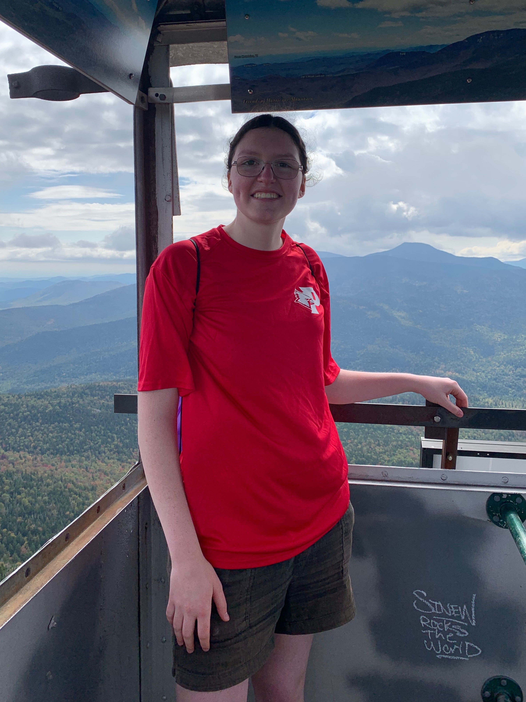

 I’m Laura Holtman, I’m from Dutchess County, New York, and currently majoring in Digital Media Production at SUNY Plattsburgh (Class of 2028). Film and photography have been a passion of mine since middle school. I first discovered this passion when I attended film camps over the summer. Fast forward to high school, I took a photography class my sophomore year and learned to edit using Affinity Photo. Then, in my junior and senior year I took a 2-year IB Film class. In this class I created short films with classmates and on my own. I learned to edit the films with Adobe Premiere Pro. Senior year of high school, I discovered my passion for ceramics as well as watercolor painting. I took ceramics class that year and made over 20 pieces.
Some fun facts about me are I’ve been a Girl Scout since kindergarten, I earned my Girl Scout Gold Award in the summer of 2024, and I am a lifetime member of Girl Scouts USA. Volunteering is something I really enjoy. I have volunteered in many areas and one of my favorite things to do is care for autism service dogs in training which I have been doing since 2018. I also have been playing the alto saxophone since 4th grade. I have been a part of symphonic band since 4th grade and a part of jazz band as well as a community band since middle school. We play at community events and events honoring veterans. In my free time I love to volunteer, create art, and hike.
Throughout my years of education at SUNY Plattsburgh, I am looking forward to strengthening my film, photography, and design skills in the Digital Media Production program.